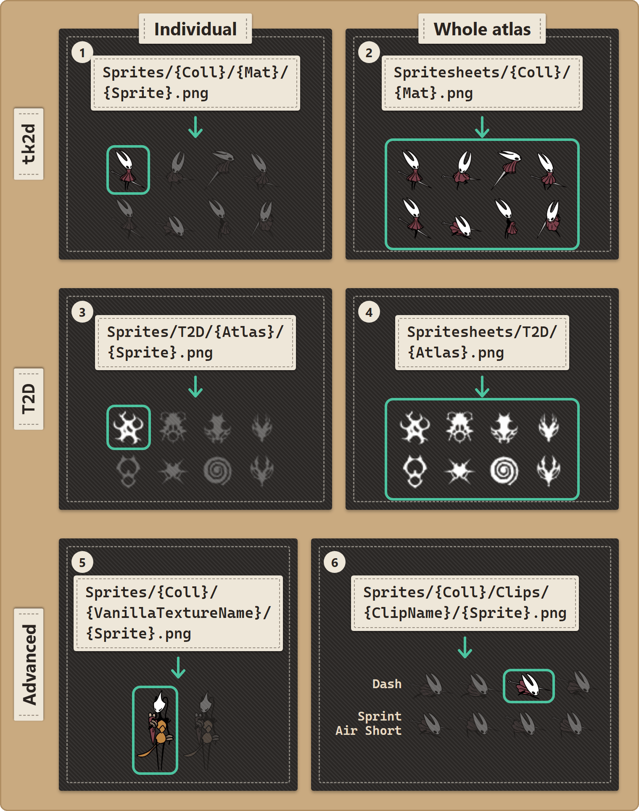

Pack Folder Structure
Reference · for creators.
Where to put each file so Stitchwork finds it.
Players can skip this page: pack authors take care of it.
Explore the layout
Click through a real pack — and your own working folder — below. Switch pack type along the top; pick any folder or file to see what it's for, an example path (real Silksong assets), and the page that explains it.
The basic shape
A pack is a folder. Inside the folder, you have subfolders for each type of asset you're replacing:
my-cool-pack/
manifest.json ← required for Thunderstore distribution
README.md ← what your pack does; required for Thunderstore
icon.png ← Thunderstore display icon, 256×256 canvas resolution
Stitchwork/ ← identifier for the plugin
Sprites/ ← image replacements (most common)
Spritesheets/ ← whole-atlas image replacements (advanced)
Sounds/ ← audio: SFX and music
Videos/ ← cutscene replacements
Text/ ← dialogue, item names, UI text
Fonts/ ← fonts: fill missing characters, or replace one language's font
Recolor/ ← scene tint and light rules, Hornet's colors, slash and poison colors
pack.json ← optional: pack name/author/version/description (shown in the Pack Manager)
cover.png ← optional: the image on your pack's card in the Pack Manager
conditions.json ← optional preview: names and orders the rule sets
Sets/ ← optional preview: parts of the pack that switch on by conditionsThe three Thunderstore files sit beside Stitchwork/, not inside it. A pack for your own use needs only the Stitchwork/ folder.
You don't need every folder — only the ones for asset types you're actually replacing. A pack that only changes music has a Sounds/ folder and skips the rest.
Naming your pack — pack.json
Optional, but it's how your pack shows up in the Pack Manager. A small JSON file that sits next to your asset folders, inside the pack's Stitchwork/ folder — in the global Packs folder and in a Thunderstore install alike:
{
"name": "Crystal Hornet",
"author": "You",
"version": "1.0.0",
"description": "A crystalline reskin of Hornet.",
"cover": "art/banner.png"
}All five fields are optional; without pack.json (or without a name), the Pack Manager just shows the folder name. The card shows the name, then "by {author} · v{version}", then the description. cover names the card's image inside the pack. Without it, the card uses a cover.png beside pack.json, or one beside the package's manifest.json (Pack cover). Don't confuse pack.json with manifest.json — that's Thunderstore's packaging file (store listing, dependencies), which Stitchwork itself never reads. See Distributing Your Pack. Rule sets (Sets/ and conditions.json) are a preview: see Rule sets in Conditional Activation.
Where your files live
Three places for your files:
Option A: as a Thunderstore package (recommended for distribution)
BepInEx/plugins/{AuthorName-PackName}/Stitchwork/
Sprites/
Sounds/
...Notice the Stitchwork/ subfolder inside the plugin folder. That matters — Stitchwork specifically looks for that name (and also accepts the older name Patchwork/ for backwards compatibility with older packs).
This is the format Thunderstore expects. Your pack ships as a single folder under BepInEx/plugins/ and Stitchwork discovers it automatically.
Option B: in the global Packs folder (recommended for your own packs)
<Game folder>/Packs/{PackName}/Stitchwork/
Sprites/
Sounds/
...The same shape, in the game folder instead of a mod-manager profile. Every profile sees this folder, and a mod-manager update never touches it. The on/off state of each pack stays per profile.
Option C: the working folder
You can also drop files directly into <Game folder>/ (without a pack folder around them). This is the working folder — fastest for prototyping but not recommended for shipping. Files in the working folder can't be turned off via the Pack Manager because they aren't a pack; they always apply. A mod-manager update never touches this folder either.
Sprites: where they go
Sprite paths have their own reference page — Sprite Paths Reference: the two questions that pick a path, all six layouts with examples, and the anchor tags for bigger art. The overview:
| Individual | Whole atlas | |
|---|---|---|
| tk2d | Sprites/ | Spritesheets/ |
| T2D | Sprites/ | Spritesheets/ |
Individual files are the authoring path; whole atlases are the porting door for finished sheet-based work (Porting Prior Work). Two advanced layouts — instance-specific and per-clip — are on the reference page too.

tk2d versus T2D
Two sprite systems, two folder trees, and which one a sprite belongs to decides its path. How Stitchwork Works explains the split; the Dev Hub tells you per sprite. The Graphics tab's Library panel lists tk2d sprites in its Animation mode and T2D sprites in its T2D Textures mode.
Sounds folder
Sounds/{ClipName}.{ext}Supported extensions: .ogg, .wav, .mp3, .aiff.
Find clip names via the Dev Hub Audio tab — clips that play populate the Live log panel on the left. Click a name to copy it. The click also finds the clip in the Clip browser panel on the right.
Example: replacing the title music.
Sounds/title_music.oggStitchwork reads no loop tags. The game's audio source decides if a clip loops. A replacement music clip loops when the original looped, and it loops the whole file.
Videos folder
Videos/{CinematicName}.{ext}Supported extensions: .mp4, .webm, .ogv, .mov, .avi, .m4v, .mpg, .mpeg, .wmv.
.mp4 with H.264 video and AAC audio is the most reliable format across systems. Other formats may work but have less testing.
Find cinematic names in the Dev Hub Video tab. Its Cinematics panel lists the cinematics it knows, each marked replaced, played or available. The Live cinematic log under the list adds each cinematic as it plays. Click a name to copy it.
Text folder
Text/{SheetName}/{LANG}.ymlSheetName is the name of a localization sheet (e.g. Prompts, Quests, Wanderers). LANG is a language code (EN, ZH, FR, DE, JA, etc.).
Example: replacing the English text of one wanderer NPC's dialogue.
Text/Wanderers/EN.ymlYAML files are simple key-value pairs. See the Text and Dialogue page for the format and how to discover sheet/key names.
Fonts folder
Fonts/_fallback/{name}.ttf (or .otf) ← adds characters that no loaded font has
Fonts/{target}/{name}.ttf ← replaces one font in placeFallback fonts fill in characters the game's own fonts don't cover (□□□ "tofu" boxes in replacement text). They are additive: no vanilla font changes. A target folder replaces one font. The target is a language code (EN, FR, DE, ES, IT, PT, JA, RU, ZH, ZH_TW, KO), default (each Latin-script language without a folder of its own), or a font asset name. The game's own rendering stays behind the replacement as a fallback. Fonts directly under Fonts/ are not loaded. See Fonts — Missing Characters and Replacement.
Recolor folder
Recolor/{SceneName}.txt ← tint and light rules for one scene
Recolor/_global.txt ← tint rules for every scene
Recolor/_hero.txt ← Hornet's saturation, hue, brightness and silk tiers
Recolor/_slash.txt ← nail-slash colors
Recolor/_poison.txt ← poison tint and huePlain text, one rule per line. The Graphics tab's Colors mode writes these for you; _hero.txt comes from its Hornet tab. See Colors.
The folder name is Recolor/. A pack made before the rename can have a Recolour/ folder. Stitchwork reads it when the pack has no Recolor/ folder, and the log names each pack that uses the old name. The Pack Doctor (the stethoscope on the pack's card) still warns about it. Rename the folder. (In the working folder, Stitchwork renames an old Recolour/ folder for you at startup.)
Naming case-sensitivity
Stitchwork is mostly case-insensitive on filenames — Knight/atlas2/Idle0000.png and knight/atlas2/idle0000.png both work. But it's still good practice to match the case the game uses, because:
- The top-level folders must match exactly on Linux and Steam Deck. These are
Sprites,Spritesheets,Sounds,Text,Fonts,VideosandRecolor. A pack whose folder issprites/instead ofSprites/works on Windows and is silently ignored on a case-sensitive system. The Pack Doctor flags it. Below these folders, case does not matter. - Some external tools ARE case-sensitive at the filesystem level.
- It makes your pack easier to compare against vanilla dumps.
- It shows up cleaner in the Pack Manager's COVERED fold.
When in doubt, use the case the dump produced.
File formats
| Asset type | Recommended format | Also works |
|---|---|---|
| Sprite PNG | PNG with alpha | PNG with no alpha |
| Audio (SFX) | OGG | WAV, MP3, AIFF |
| Audio (music, looping) | OGG | WAV (large files) |
| Video | MP4 (H.264 + AAC) | WEBM, MOV, others |
| Text | UTF-8 YAML | UTF-8 with BOM (works but not preferred) |
PNGs can be any size for individual sprites. If your replacement is bigger than the vanilla slot, the atlas grows to fit; your art keeps its size. For whole-atlas replacements (Spritesheets path), keep the original layout: a tk2d sheet may be a uniform scale of the original (same width-to-height ratio); a T2D sheet must match its size exactly.
What files Stitchwork ignores
Inside your pack folder, Stitchwork will quietly skip:
- Files whose names don't match what the game references (typo'd filenames). They sit on disk doing nothing.
- Hidden files (starting with
.) - System files (
.DS_Store,Thumbs.db, etc.) - Source files (
*.psdPhotoshop source files, etc.) - Files in folders that don't match the expected structure (e.g. a stray PNG in the root of
Sprites/).
This means it's safe to drop your Photoshop source files alongside the exported PNGs in the same folder — they'll just be ignored. Helpful when you want to ship a pack that includes editable sources.
What's next
- Starting a Skin Pack — concrete walkthrough.
- Finding Any Sprite — finding the right names.
- Bigger Art: Anchors — for enlarged sprites.
- Distributing Your Pack — Thunderstore shipping.